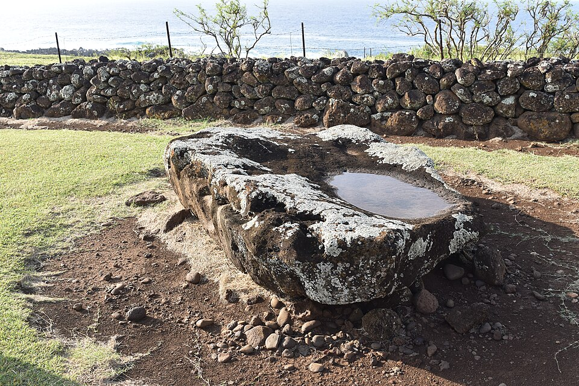

Moʻokini Heiau
Place: Moʻokini Heiau, Kohala Historical Sites State Monument, North Kohala
Type: Ancient luakini (state temple)
Namesake: The Moʻokini priestly lineage, hereditary guardians of the temple for more than 1,500 years
Story it tells: How one of Hawaiʻi's oldest temples became the spiritual heart of ancient Kohala, the war temple of Kamehameha I, and one of the few major heiau to survive the end of the traditional Hawaiian religion.

Standing on the northern tip of Hawaiʻi Island, Moʻokini Heiau is one of the oldest surviving temples in the Hawaiian Islands. This place served as one of the most sacred centers of political and religious authority in Hawaiʻi for an extensive part of its history.
Unlike many archaeological sites, Moʻokini remains remarkably intact. Massive dry-stacked basalt walls still enclose the temple, giving visitors an unusual sense of its original scale and power. For more than fifteen centuries, the site has remained connected to a single hereditary priestly family, the Moʻokini lineage, making it not only one of Hawaiʻi's oldest sacred places, but one of its longest continuously cared-for cultural sites.
According to Hawaiian oral tradition, the first temple was built around the fifth century by the high priest Kuamoʻo Moʻokini. While archaeologists cannot confirm the exact date, few dispute the site's extraordinary antiquity. Generation after generation of descendants maintained and expanded the heiau, preserving its sacred traditions through centuries of political change.
The temple's construction has two stories. One tradition tells of thousands of people forming a human chain from the Niuliʻi area, about ten miles away, passing basalt stones hand-to-hand to construct the massive temple walls. Other traditions attribute extraordinary feats of construction to the Menehune. Both accounts emphasize the immense labor and sacred importance attached to the building of Moʻokini.
Around the fourteenth century, tradition holds that the influential priest Pāʻao rebuilt the older temple on a much larger scale. He is associated with the development of Moʻokini as a walled luakini heiau, the highest class of Hawaiian temple, where human and animal sacrifices were offered to Kū. Moʻokini became the principal temple of northern Hawaiʻi Island, closely associated with ruling aliʻi and the high priests who served them.
As a luakini, the temple served as the spiritual center for ceremonies connected to warfare, succession, purification, and the maintenance of political authority. Before military campaigns, ruling chiefs sought the favor of Kū within these walls, believing proper ritual observance would ensure victory in battle.
Just outside the temple walls rests the large flat basalt slab now known as the Holehole Stone. Oral traditions identify it as one of the locations associated with rituals performed during the temple's centuries as a luakini. Human sacrifice formed part of the religious practices associated with temples of this rank, typically involving prisoners of war or individuals selected according to strict ceremonial protocols. These rituals reflected the religious and political system that governed ancient Hawaiʻi before Western contact.
Moʻokini Heiau became closely associated with Kamehameha I, who was born at the nearby Kapakai Royal Housing Complex. As an adult, Kamehameha used Moʻokini as his war temple, and it housed his family's war god Kūkaʻilimoku. In 1791, Kūkaʻilimoku was transferred south to Kamehameha's newly completed Puʻukoholā Heiau, built during his campaign to consolidate control of Hawaiʻi Island and ultimately the islands beyond.
The temple's location of North Kohala was one of the great chiefly centers of ancient Hawaiʻi, producing powerful ruling families and serving as the ancestral homeland of Kamehameha's lineage.
Moʻokini's survival is almost as remarkable as its construction. In 1819, following the death of Kamehameha I, King Liholiho (Kamehameha II) and Queen Regent Kaʻahumanu abolished the ancient kapu system during the ʻAi Noa. Across Hawaiʻi, temples were dismantled, kiʻi were destroyed, and centuries of religious practice came to an abrupt end.
Yet Moʻokini largely escaped destruction.
Part of the reason lies in the temple's reputation. For centuries, Moʻokini had been regarded as one of the most sacred and spiritually powerful places in Hawaiʻi. Stories of its role as a luakini, combined with generations of strict kapu surrounding the site, created a deep sense of reverence and fear. Oral traditions recount that when orders came to dismantle the old temples, many people simply refused to touch Moʻokini, believing terrible spiritual consequences would follow anyone who desecrated such a sacred place. Rather than being torn down, the temple was gradually abandoned, while countless other heiau disappeared.
Members of the Moʻokini family quietly continued to watch over the site through the nineteenth and early twentieth centuries. Their stewardship ensured that the walls remained standing and that the traditions associated with the temple survived despite the profound cultural changes that followed the arrival of Christianity and the overthrow of the ancient religion.
In the twentieth century, those efforts became increasingly public. Heloke Moʻokini, who served as Kahuna Nui from 1930 until 1966, worked tirelessly to preserve the history. His advocacy helped shift public perception away from seeing the temple solely as a place associated with fear and sacrifice toward recognizing it as one of Hawaiʻi's greatest surviving cultural treasures.
That growing appreciation culminated in Moʻokini Heiau's designation as a National Historic Landmark, recognizing its extraordinary importance to Hawaiian history, religion, and architecture. While the site remains under the management of Hawaiʻi State Parks as part of the Kohala Historical Sites State Monument, descendants of the Moʻokini family continue to play an active role in its stewardship today.
In 1978, Kahuna Nui Leimomi Moʻokini Lum lifted the ancient kapu restricting entry to aliʻi and kahuna and rededicated Moʻokini to the “children of the land.” In 1994, she expanded that invitation further, rededicating the heiau to the “children of the world.
The ceremony reflected the broader Hawaiian Renaissance that was unfolding across the islands. Rather than reviving the temple as a place of political power or sacrifice, practitioners sought to preserve it as a living cultural landscape where future generations could better understand the beliefs, accomplishments, and worldview of their ancestors.
The name Moʻokini is inseparable from the family that has protected this place for more than fifteen centuries. Traditions often interpret the name as referring to "many lineages" or a "long genealogy," an especially fitting description for a temple whose guardianship has passed continuously through a single hereditary priestly line. Few places in Hawaiʻi can claim such an enduring connection between a sacred site and the descendants of its original caretakers.
More than 1,500 years after its traditional founding, the winds still blow across Upolu Point, the basalt walls still stand, and the name Moʻokini continues to connect the present with one of the deepest and most enduring chapters of Hawaiian history.